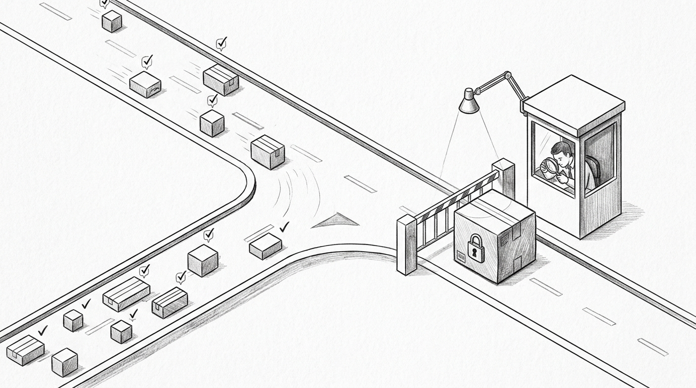
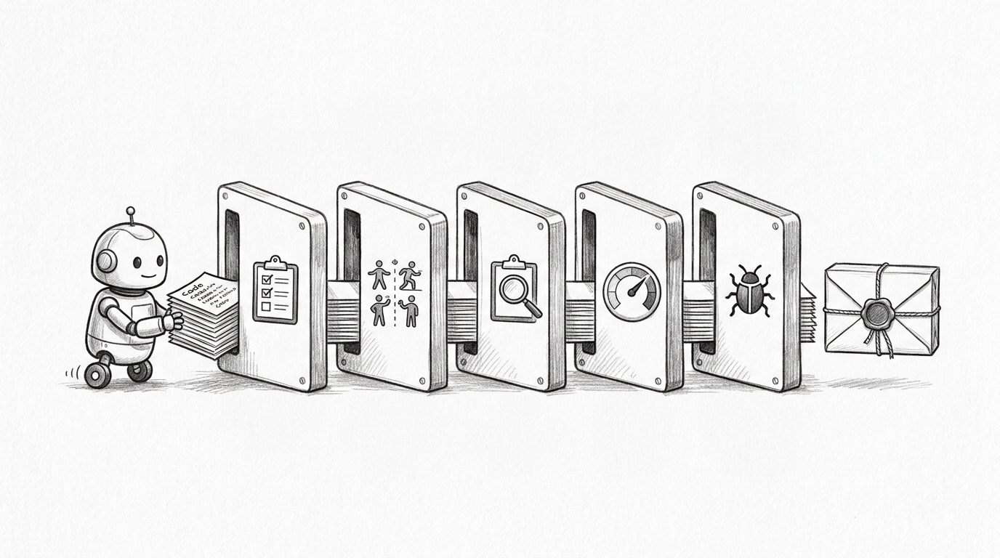
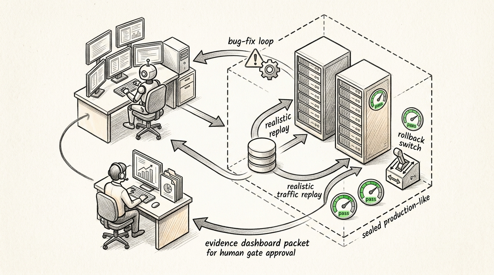
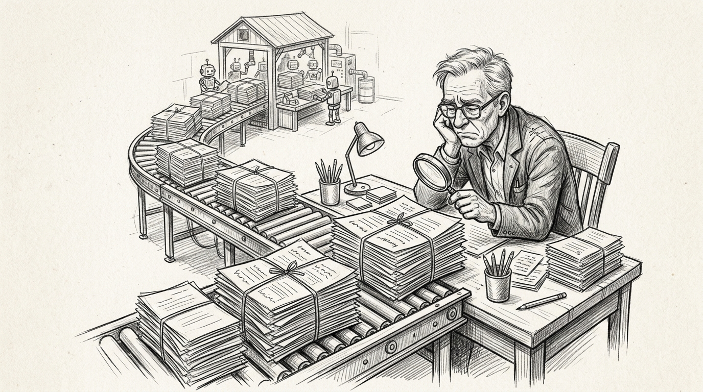

The Outcome Gate
The Outcome Gate
A senior engineer opens a pull request and the scrollbar becomes a threat signal. The agent did not change one function. It rewired a workflow, added tests, changed configuration, edited documentation, and left behind a diff large enough that "review every line" now means "become the slowest machine in the factory."
That is the tension behind Uncle Bob Martin's July 2026 post. The surprising sentence was not that agents can write code. The surprising sentence was that the author of Clean Code said his current strategy is to not read any code written by his agents, because that is the only way he can benefit from their productivity.1
The easy reaction is outrage. The useful reaction is to read the next sentence. Martin did not say "trust the agent." He said he surrounds agents with constraints: unit tests, Gherkin tests, QA procedures, quality metrics, mutation testing, test coverage, and more. His word for it was the gauntlet. Two weeks earlier, he added the caveat that just because AI can perform every test does not mean it always should; he was still calibrating how much gauntlet fits which project.2

Martin's post works because it violates the old professional reflex: if I am responsible for the code, I must understand the code. That reflex is not wrong. It protected systems for decades. It also assumes the amount of code moving through the system is sized for human reading.
Agentic workflows break that assumption. A coding agent can research a repository, create a plan, edit files, run checks, fix failures, and open a pull request while the human is in another meeting. The question stops being "can a person read this code?" and becomes "where does human judgment produce the most control per minute?"
The answer is not "nowhere." Humans still own intent, trade-offs, architecture boundaries, security exceptions, release accountability, and post-incident learning. But they cannot be placed at every internal motion of the agent and still get agentic throughput. Too many human-in-the-loop checkpoints turn the factory back into a ticket queue.
The gauntlet matters because it turns "I did not read the code" from a reckless sentence into an operating claim. A gauntlet is not a test suite with a better name. It is a set of independent constraints that the agent cannot talk its way around.

Unit tests check local behavior. Gherkin or BDD scenarios encode examples a product owner can read. QA procedures exercise customer journeys. Quality metrics catch structural drift. Mutation testing changes the implementation in small ways to see whether tests notice. Coverage shows where evidence is absent, though it cannot prove evidence is good.
That mixture points to the real lesson: the control plane moves from implementation text to verification artifacts. The reviewer no longer asks only "is this line elegant?" The reviewer asks "which claim does this behavior satisfy, what evidence proves it, who owns the oracle, and what happens if the evidence is wrong?"
That last question is where many "AI writes the tests" workflows fail. If the same agent misunderstands the requirement, writes the implementation, writes the test, and grades the result, the harness can become a machine for confirming the original misunderstanding. The gauntlet works only when its expectations come from outside the agent's self-confirming loop.
The traditional pull-request review system was already a queue. Agents make the queue visible. Microsoft research from July 2026 reported a 24.0 percent increase in merged pull requests per engineer per day for regular command-line coding-agent users, while cautioning that merged PRs are an imperfect proxy for value.10 Another July 2026 enterprise study of 802 developers and 196,212 pull requests found near-doubling of per-capita PR throughput in a favorable environment, but the work moved downstream into review and automation.11
That is the productivity discount. If an agent doubles the amount of change entering the system, and every change still waits for a human to inspect every line, the constraint did not disappear. It moved. Teams then respond in two bad ways: shallow approvals that preserve speed but lose control, or deeper approvals that preserve control but give back the speed.
GitHub's March 2026 code-review data points in the same direction: more than one in five GitHub reviews involved Copilot code review, and more than 12,000 organizations ran it automatically.13 Automated review does not remove the need for design judgment. It shows that review itself is becoming an agentic system, with humans supervising a collaboration pattern rather than reading every changed line as the default proof of diligence.
The hardest problem is not whether the agent can write code. The hardest problem is whether the target is correct. If AI drafts the spec and AI implements the spec, a wrong spec makes the whole factory efficient at being wrong.
That is why the oracle must be managed before the output. In testing language, the oracle is the source of expected truth: the business rule, customer promise, regulatory obligation, invariant, example, or product decision that says what correct means. The agent can draft it. The agent can format it. The agent can turn it into executable checks. The agent should not be the final authority that it is true.
Fresh spec-driven development work is converging on that point. Microsoft's June 2026 article argues that AI-native engineering needs structured specs as the shared source of truth across requirements, design, implementation, tests, and validation.5 O'Reilly's July 2026 analysis makes the control explicit: agent-written specs still need validation before implementation agents run, and BDD-style executable examples help turn judgment into a runnable oracle.6
The practical rule is simple: review the oracle before reviewing the output. Approve the business rule. Approve the negative cases. Approve the personas and permissions. Approve the "not included" section. Approve the data boundary. Then let the agent produce the boring volume under that contract.
A verification harness is the factory wall around the agent. It decides what context the agent sees, where it can act, which tools it can use, how its work is evaluated, and what evidence survives after the session ends. The harness is not a prompt. It is durable infrastructure.
Thread AI's June 2026 harness write-up draws a useful distinction: rules describe intent, contracts define completion, and facts decide whether the work is done.4 Microsoft Foundry's July 2026 agent-evaluation docs describe the same direction from another angle: datasets, rubrics, quality and safety evaluators, pass/fail thresholds, and production traces turned into curated evaluation datasets.1415
A serious harness has layers. First, spec intake: what is the approved intent, what is explicitly out of scope, and what assumptions are unresolved. Second, risk classification: low, medium, high, or critical. Third, executable acceptance: examples, properties, contracts, and negative cases. Fourth, deterministic build and regression checks. Fifth, AI evals and trace grading for behaviors that deterministic tests do not capture. Sixth, security, dependency, permission, and supply-chain checks. Seventh, a policy gate that emits an evidence package.

Production-grade UAT starts when the agent can exercise its work through a production twin, not a toy staging box. For a checkout change, the harness deploys the branch through the same release path into an isolated environment with production-shaped configuration, schema migration, feature flags, observability, and replayed or synthetic traffic. The agent can run journeys, inspect traces, fix failures, redeploy, and rerun the suite. It cannot promote itself.
That is where UAT changes. The gate becomes a human-readable evidence packet: approved spec version, covered journeys, personas and permission boundaries, failed checks, fixes made by the agent, security and dependency results, sensitive-file changes, unresolved risks, rollback plan, monitoring plan, and explicit acceptance debt. The human approves the release decision from that packet, not from raw confidence language.
Outcome management fails if every change gets the same ceremony. Low-risk work should not wait behind a human architecture board. High-risk work should not slip through because the tests are green. The point is not fewer checkpoints. The point is checkpoints placed where judgment compounds.

A practical tiering model looks like this. Low-risk changes get automated checks, sampled outcome review, and telemetry monitoring. Medium-risk changes get human review of intent, evidence, and sensitive diffs. High-risk changes get review of spec, architecture, security posture, and relevant code paths. Critical changes get independent expert review, staged rollout, rollback rehearsal, and explicit sign-off.
The code-reading list is concrete. Humans still read code at trust boundaries: authentication, authorization, crypto, secrets, identity, payments, billing, privacy, data retention, migrations, analytics, CI/CD, deployment, rollback, infrastructure, tests, policy, agent instructions, MCP configuration, and anything involved in a high-severity incident or unexplained eval failure.
Security sources are moving in the same direction. Snyk's June 2026 agentic development security launch frames the new problem as governing what agents use, what they do, and what they generate.19 NIST's 2026 AI-agent standards work and AI-agent identity material show that agent identity, authorization, and operational controls are becoming standards concerns, not local team preferences.2021
The industry language around this is settling around the agentic software factory. That phrase is useful only if the factory is understood as a managed production system, not a room full of unsupervised agents.
BCG Platinion's March 2026 framing says humans define business intent and review outcomes while agents build, test, and ship.3 Tricentis describes agentic software quality through governance, approvals, auditability, and release readiness.18 Datadog and OpenAI both published harness-oriented engineering material in early 2026, describing agents that operate inside systems of tools, evals, feedback loops, and constraints rather than free-form chat sessions.1617
The alignment is not perfect. Vendors have incentives to name categories early. Consulting firms have incentives to name transformations. Research papers have limited external validity. Still, the direction is consistent: agents are doing more SDLC work, and the mature response is to strengthen the control plane around intent, identity, tools, evidence, quality, and release gates.
That changes the role of platform engineering. The internal platform is no longer just a golden path for human teams. It becomes the factory floor: repository rules, isolated worktrees, tool permissions, test runners, eval datasets, trace capture, secret boundaries, environment promotion, policy-as-code, audit logs, and exception handling. The agent works inside that floor. The human improves the floor.
It also changes the role of product management. A vague ticket is no longer a harmless starting point. It is an ambiguous contract that an agent can satisfy in the wrong direction at high speed. Product must supply sharper acceptance truth: users, journeys, business rules, disallowed behavior, nonfunctional requirements, and examples. The agent can help draft those artifacts, but the organization has to own their correctness.
The strongest objection to Martin's post is correct: outcome checks only prove what they measure. A harness can be wrong. A metric can be gamed. A generated spec can launder a false assumption. A security scanner can miss a privilege escalation path. A green dashboard can become theater.
That objection does not restore universal code reading as the default. It changes the design target. The answer is engineered distrust: oracle separation, adversarial challenge, hidden tests, mutation tests, negative cases, least-privilege tools, traceable evidence, risk gates, and post-release telemetry that feeds back into the harness.
March 2026 TDAD research supports that direction by combining behavioral specs with visible and hidden tests, mutation testing, and regression scenarios.8 Another March 2026 paper reported that targeted test context reduced regressions in a SWE-bench Verified experiment, while generic procedural TDD prompting increased them.9 The lesson is not "tests solve it." The lesson is that the test context must be designed, targeted, and independent enough to catch the failure modes agents actually create.
The deeper catch is cultural. Many organizations say "human in the loop" when they mean "someone will be blamed later." That is not governance. A human checkpoint has value only when the human can see the right artifact, has authority to stop the flow, and is placed before the expensive mistake. Reviewing an agent's thousand-line diff after the wrong requirement has already been accepted is late theater.
The better phrase is human-on-the-loop for routine flow and human-in-the-loop for risk. Humans supervise the system, sample outcomes, tune the harness, and intervene on exceptions. They enter the critical path when intent, risk, security, architecture, compliance, or accountability demands judgment.
Martin is directionally right and dangerously easy to misread. The next SDLC shift is not from review to no review. It is from reading the factory's internal motion to governing the contract, gates, evidence, and exceptions that decide whether the factory produced the right thing. Agentic software delivery is not reading less — verifying better.
References
- Uncle Bob Martin. X post, July 23, 2026. x.com/unclebobmartin/status/2080257779395154409.
- Uncle Bob Martin. X post on test-overload calibration, July 2, 2026. x.com/unclebobmartin/status/2072736888478175413.
- BCG Platinion. "The Agentic Software Factory." March 26, 2026. bcgplatinion.com/insights/the-agentic-software-factory.
- Thread AI. "An inside look: how we built our agentic SDLC harness." June 24, 2026. threadai.com/blog/an-inside-look-how-we-built-our-agentic-sdlc-harness.
- Microsoft Developer Blog. "Spec-driven development: AI-native engineering." June 10, 2026. developer.microsoft.com/blog/spec-driven-development-ai-native-engineering.
- O'Reilly Radar. "Why AI Coding Agents Still Need Clear Specs." July 8, 2026. oreilly.com/radar/why-ai-coding-agents-still-need-clear-specs.
- Augment Code. "AI spec template." April 8, 2026. augmentcode.com/guides/ai-spec-template.
- arXiv 2603.08806. Behavioral specifications, hidden tests, mutation testing, and regression scenarios for tool-using agents. March 2026. arxiv.org/abs/2603.08806.
- arXiv 2603.17973. Targeted test context and AI coding regressions. March 2026. arxiv.org/abs/2603.17973.
- arXiv 2607.01418. Microsoft early-2026 command-line coding agent rollout study. July 2026. arxiv.org/abs/2607.01418.
- arXiv 2607.01904. Enterprise 2x mandate study of 802 developers and 196,212 pull requests. July 2026. arxiv.org/abs/2607.01904.
- arXiv 2607.13196. Agentic code review collaboration patterns and review quality. July 2026. arxiv.org/abs/2607.13196.
- GitHub Blog. "60 million Copilot code reviews and counting." March 5, 2026. github.blog/ai-and-ml/github-copilot/60-million-copilot-code-reviews-and-counting.
- Microsoft Foundry. "Evaluate your AI agent." Updated July 24, 2026. learn.microsoft.com/en-us/azure/foundry/observability/how-to/evaluate-agent.
- Microsoft Foundry. "Create evaluation datasets from traces." Updated July 24, 2026. learn.microsoft.com/en-us/azure/foundry/observability/how-to/traces-to-dataset.
- OpenAI. "Harness engineering." February 11, 2026. openai.com/index/harness-engineering.
- Datadog. "Harness-first agents." March 9, 2026. datadoghq.com/blog/ai/harness-first-agents.
- Tricentis. "Tricentis introduces Agentic Software Quality Platform." March 10, 2026. tricentis.com/news/tricentis-introduces-agentic-software-quality-platform.
- Snyk. "Snyk launches Evo Agentic Development Security." June 23, 2026. snyk.io/news/snyk-launches-evo-agentic-development-security.
- NIST. "AI Agent Standards Initiative." Published February 17, 2026; modified April 20, 2026. nist.gov/artificial-intelligence/ai-agent-standards-initiative.
- NIST CSRC/NCCoE. "Accelerating the adoption of software and AI agent identity and authorization." February 5, 2026. csrc.nist.gov/pubs/other/2026/02/05/accelerating-the-adoption-of-software-and-ai-agent/ipd.